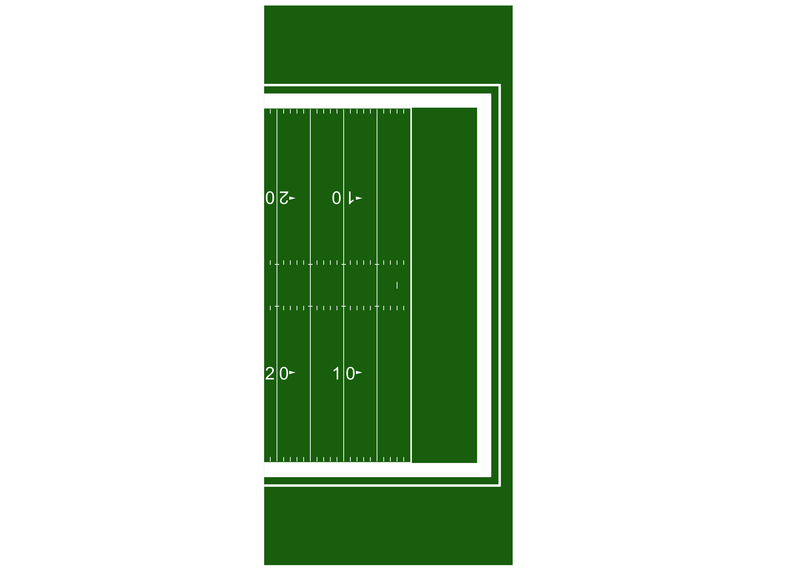
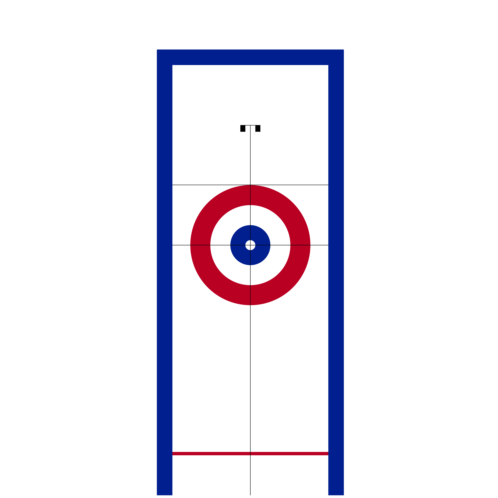
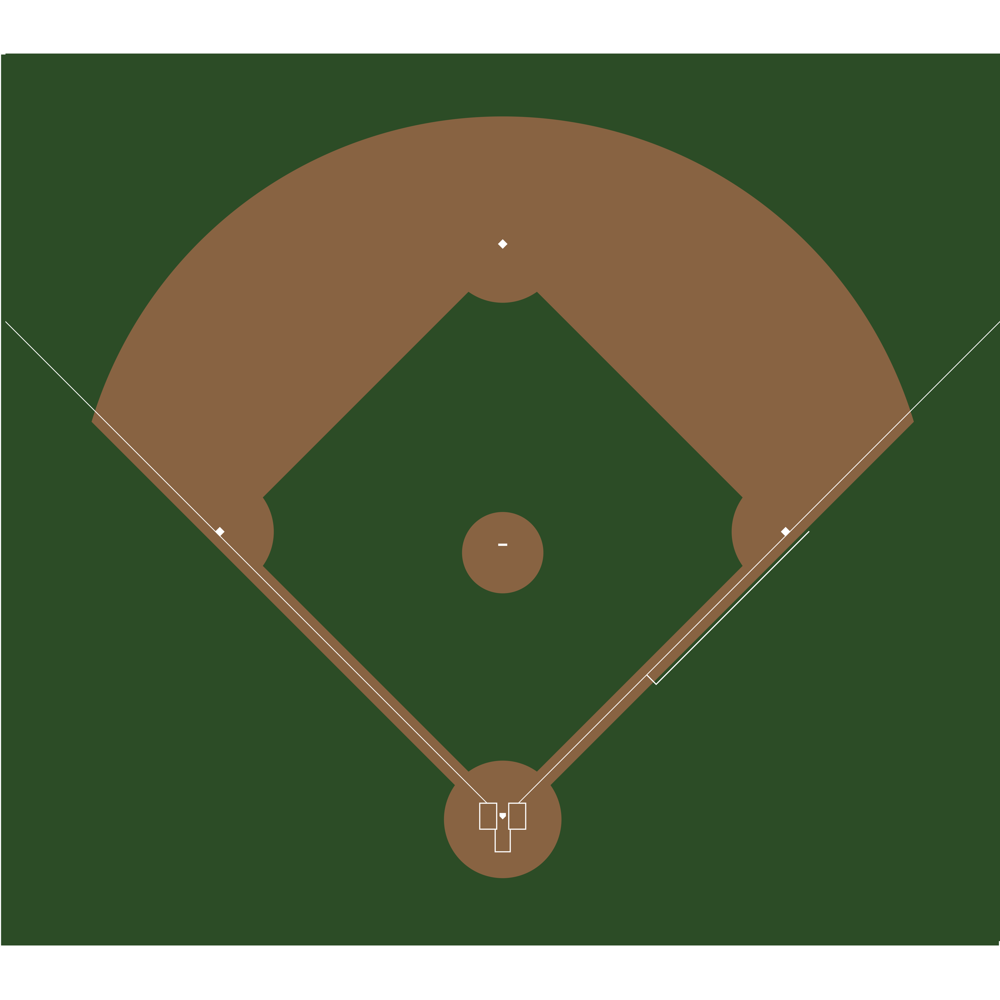
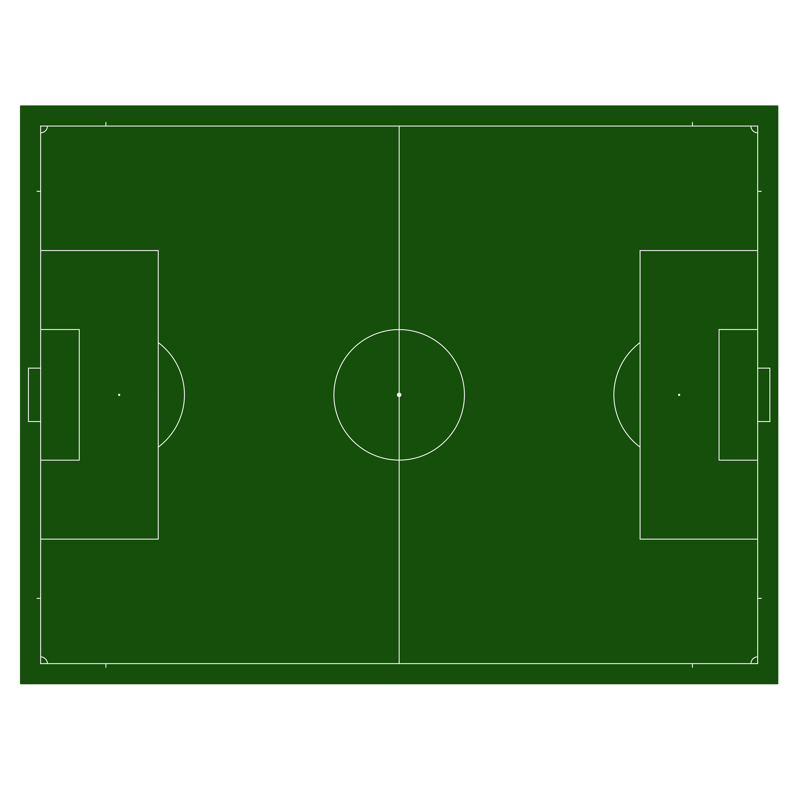

As the field of sports analytics evolve, there’s a growing need for methods to both track and visualize players throughout the game. This package aims to make this easy regardless of sport needed to be plotted.
This repository contains code necessary to draw scale versions of playing surfaces to visualize play-by-play data for baseball, basketball, curling, football, hockey, soccer, and tennis in R. For the Python version of this package, click here.
Installation
The most recent release of sportyR is available on CRAN, and it can be installed directly via:
# Install released version from CRAN
install.packages("sportyR")The development version of sportyR can be installed from GitHub with:
# Install development version from GitHub
devtools::install_github("sportsdataverse/sportyR")Once the library is installed, be sure to load it into the working environment.
Plotting Functions
All plotting functions in this library are named as geom_{sport}(), and take the following arguments:
league: the league code for the sport. In all functions, this will NOT have a default value. The supplied league is case-insensitive. Future iterations of this package may allow the full league name to be supplied if desired (e.g.league = 'National Basketball Associaton'instead ofleague = 'NBA'), but this feature is not currently available.display_range: This automatically “zooms” in on the area of the plot you’re interested in. Valid ranges here vary by sport, but can be found by calling?geom_{sport}and reading about the display rangesx_transandy_trans: By default, the origin of the coordinate system always lies at the center of the plot. For example,(0, 0)on a basketball court lies along the division line and on the line that connects the center of each basket. If you want to shift the origin (and therefore the entire plot), usex_transandy_transto do so{surface_type}_updates: A list of updates to the parameters that define the surface. I’ll demo how to use this to change a hockey rink in a different vignette, but I’ll call this out herecolor_updates: A list that contains updates to the features’ colors on the plot. These are named by what the feature is, usingsnake_caseto specify the names. To get the list of color names you can change, try runningcani_color_league_features()with your desired leaguerotation: An angle (in degrees) that you’d like to rotate the plot by, where +is counterclockwisexlimsandylims: Any limits you’d like to put on the plot in the x and y direction. These will overwrite anything set by thedisplay_rangeparameter{surface}_units: If your data is in units that are different than how the rule book of the league specifies the units (e.g. you’ve got NHL data in inches, but the rule book describes the rink in feet), change this parameter to match the units you’ve got your data in. You’re welcome to change the units of the data as well, but this is provided for convenience
TV View and Display Ranges
TV View
All of the geom_{sport}() functions, by default, will draw the surface in what can be considered “TV view”, or the way that the surface would typically be displayed on a television broadcast. This typically means the action moves from left to right across the screen (a basketball game that has the baskets on the left and right end of the court). As mentioned above, it is possible to change this to be in any orientation through the rotation parameter to each geom_{sport}() function.
There are a few exceptions to this:
geom_baseball()is displayed from the high-home view by default, as baseball coordinates typically have the+yaxis extending from the back tip of home plate towards center fieldgeom_tennis()is displayed with the court diagrammed from the perspective of the chair umpire
Display Ranges
Related to the idea of custom displays of the plot is the concept of the display_range parameter in the geom_{sport}() function. This is unique to each sport, but globally supported across the package. This parameter allows the specification of a designated region of the surface to display. As an example, if you’re trying to limit the analysis of NFL data to being inside of the red zone, you may want to do something similar to the following:
# Display only the red zone of the football field
geom_football("nfl", display_range = "red zone")
Another use case would be to make the data you’re viewing easier to see. Say you wanted to look at curling data, but only cared about stone positions in the house (and not the path as to how the stones got there). You might do this:
# Display only the house on a curling sheet
geom_curling("wcf", display_range = "house")
Plot Units
Each plot function has a standardized unit of measure in which the plot is created, and is standardized by the primary units specified in their respective rule books. They are as follows (and any explanation is in parentheses):
| Sport | League | Primary Plotting Unit |
|---|---|---|
| Baseball | Little League | ft |
| Baseball | MiLB | ft |
| Baseball | MLB | ft |
| Baseball | NCAA | ft |
| Baseball | NFHS (High School) | ft |
| Baseball | Pony | ft |
| Basketball | FIBA | m |
| Basketball | NBA | ft |
| Basketball | NBA G League | ft |
| Basketball | NCAA | ft |
| Basketball | NFHS | ft |
| Basketball | WNBA | ft |
| Curling | WCF (World Curling Federation) | ft |
| Football | CFL | yd |
| Football | NCAA | yd |
| Football | NFHS11 (High School, 11 players) | yd |
| Football | NFHS6 (High School, 6 players) | yd |
| Football | NFHS8 (High School, 8 players) | yd |
| Football | NFHS9 (High School, 9 players) | yd |
| Football | NFL | yd |
| Hockey | AHL | ft |
| Hockey | ECHL | ft |
| Hockey | IIHF | m |
| Hockey | NCAA | ft |
| Hockey | NHL | ft |
| Hockey | NWHL | ft |
| Hockey | OHL | ft |
| Hockey | PHF | ft |
| Hockey | QMJHL | ft |
| Hockey | USHL | ft |
| Soccer | EPL | m |
| Soccer | FIFA | m |
| Soccer | MLS | yd |
| Soccer | NCAA | yd |
| Soccer | NWSL | yd |
| Tennis | ATP | ft |
| Tennis | ITA | ft |
| Tennis | ITF | ft |
| Tennis | NCAA | ft |
| Tennis | USTA | ft |
| Tennis | WTA | ft |
| Volleyball | FIVB | m |
| Volleyball | NCAA | m |
| Volleyball | USA Volleyball | m |
However, since the data that is supplied may come in various units of measure, the plots are able to be generated in the data’s units. This is done via the unit argument in geom_{sport}(). The features themselves will look visually identical, but the underlying coordinate grid will change.
Additionally, the convert_units() function can be called on a data frame to convert from the data’s arguments to the plot’s. For example, if soccer data is given in yards, but is desirable to be plotted in meters, calling convert_units(tracking_data, 'yd', 'm', conversion_columns = c('x', 'y')) will convert the x and y coordinates from yards to meters.
As mentioned above, the geom_{sport}() family of functions allow for rotations of surfaces via the rotation argument. To make this easy, sportyR also allows for the rotation of data frames’ coordinates so long as they contain an x and y column via the rotate_coords() function. Reflection is also possible through reflect().
Surface Examples
Most playing surfaces are standard in size, so they can be rendered via a call to the proper geom_{sport}() function like so:
# Draw a basic MLB infield plot
geom_baseball("mlb", display_range = "infield")
# Create a 100m by 75m FIFA pitch
geom_soccer(
"fifa",
pitch_updates = list(
pitch_length = 100,
pitch_width = 75
)
)
It’s also possible to plot partial surfaces and rotated surfaces:
# Draw half of a rotated NBA court
geom_basketball("nba", display_range = "offense", rotation = 270)
License
This package is released under the GPL 3.0 License.
Contributions
General Managers
Contribute by adding a new sport and become its general manager. Current general managers (and their sports) are:
- Ross Drucker - Baseball
- Ross Drucker - Basketball
- Ross Drucker - Curling
- Ross Drucker - Football
- Ross Drucker - Hockey
- Ross Drucker - Soccer
- Ross Drucker - Tennis
- Ross Drucker - Volleyball
Coaching Staffs
Notice something for a sport that already exists, but isn’t quite right? Join that sport’s coaching staff!
Scout Team
By regularly reporting issues, making very slight modifications, fixing typos, or just helping others navigate their own issues, you’re able to join the Scout Team!
Acknowledgements
Much of the underling code structure in sportyR, beginning with v2.0.0, was influenced by The Bucketless’s work on the hockey_rink package for Python.
sportyRtist
The sportyR logo was created by Lindsey Kelso. Check her out on Instagram or her online shop!